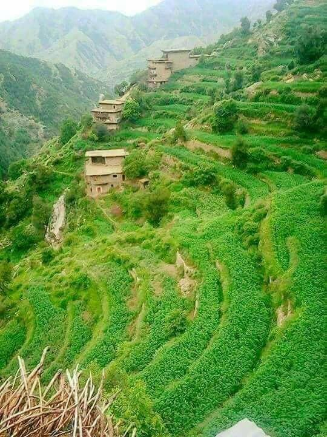

Nuristan is a mountainous province in northeastern Afghanistan, known for its unique cultural, historical, and geographic characteristics. Located in the eastern part of the country, it shares borders with Pakistan and the provinces of Kunar and Panjshir. The province is renowned for its stunning natural landscapes, including rugged mountains, dense forests, and scenic valleys, which make it one of the most beautiful and remote regions in Afghanistan.
and remote regions in Afghanistan. Geography and Natural Beauty Nuristan is one of Afghanistan’s most rugged and remote regions, with steep mountains, dense forests, and deep valleys. The province is part of the larger Hindu Kush mountain range, and its natural beauty is one of its defining features. The landscape is characterized by green forests, alpine meadows, rivers, and waterfalls, making it a haven for outdoor enthusiasts and nature lovers. The region is sparsely populated due to its difficult terrain, and many of its villages are only accessible via narrow mountain paths or by foot. This isolation has helped preserve the unique cultures and traditions of the Nuristani people, although it has also made the area less developed and harder to reach.
Challenges and Development Despite its natural beauty, Nuristan has faced numerous challenges, particularly in terms of infrastructure, security, and development. The province has been a focal point for insurgency and conflict due to its remote location and strategic importance. The rugged terrain has made it difficult for both the Afghan government and international forces to maintain a stable presence in the region. The lack of infrastructure, limited access to education and healthcare, and the overall isolation of Nuristan have made it one of Afghanistan's most underdeveloped provinces. However, efforts to improve access to basic services, promote sustainable agriculture, and foster economic development have been ongoing, often with support from international aid organizations.
Cultural Heritage and Preservation Nuristan’s cultural heritage is unique and has been the subject of interest for anthropologists and historians. The Nuristani people have their own traditional music, dances, and festivals, which are deeply rooted in their connection to the land and their religious history before their conversion to Islam.
|  |
The Beauty of Nuristan Nuristan, a hidden gem in Afghanistan, is a place of untouched natural beauty and serene landscapes. Nestled among towering mountains and lush green valleys, it offers a breathtaking view of nature in its purest form. The crystal-clear rivers flow gently through the land, reflecting the blue sky and adding to the calm, peaceful atmosphere. The forests of Nuristan are rich with tall trees and vibrant greenery, creating a haven for wildlife and a refreshing escape for anyone who visits. In spring and summer, the valleys come alive with colorful wildflowers and soft breezes that carry the scent of nature. What makes Nuristan even more captivating is its simplicity and harmony. The rhythm of life here is slow and peaceful, in tune with the beauty of the natural surroundings. The people of Nuristan, known for their hospitality and traditions, charm with their deep connection to the land. Nuristan’s beauty lies in its purity — untouched, timeless, and inspiring. It is a place where nature speaks softly, and one can find peace, tranquility, and a sense of wonder in every corner. |